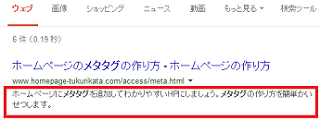

<meta name=の説明文やキーワードの書き方
HTMLタグのメタタグ（metaタグ）には様々な種類がありますが、検索エンジン対策で指定するページの「説明文」や「キーワード」については、<meta name=にてname属性とcontent属性の両方を記述します。
例えば、そのページの説明文を記述する際、まずはname属性に「説明文」の意味の「description」を指定します。次に、その実際の内容をcontentの箇所に記述することになります。
<meta name="description" content="ページの説明文">
同様に、キーワードの場合はnameの箇所に「keywords」を指定し、contentの箇所に指定するキーワードをカンマで区切って記載します。
<meta name="keywords" content="キーワード①,キーワード②">
文字コードを指定する<meta charset=についてはcharset属性のみでcontent属性は必要ありませんが、<meta name=については「content」も指定する必要があります。
そのほか、「viewport」を指定する際にも、contentの箇所に「width=device-width」などを指定するとよいでしょう。
<meta name="description"タグの書き方
ページの要約にあたる説明文のdescriptionメタタグの書き方は以下になります。
<meta name="description" content="ページの説明文">
位置は<head>タグ内に記入する必要がありますが、記載する順序に決まりはありません。一般的には<head>タグ内の最初に文字コード指定の<meta charset=を記入し、次にtitle タグを記入し、その直後にdescriptionメタタグを記載しているケースが多いです。
説明文の長さはページによってまちまちですが、そのページを的確に説明する概要を簡潔に記載します。
例えば、W3Cのサイトでは数百文字の長文となっていますが、サイトによっては一言程度の簡単なものもあります。また、文章ではなく、会社ホームページの場合は「所在地：東京都千代田区,設立：令和2年10月,資本金100万円」など、キーワードを羅列するのでも問題ありません。
あまりに短いと無視されますので、60～100文字前後の文字数で記述することをおすすめします。
このページでいえば、「<meta name=タグでのページの説明文やキーワードの書き方をご紹介しています。」のようになるかもしれません。
この場合はdescriptionタグ自体の「<」や「=」が重複してしまうため、文字をエスケープして以下のように記述する形になります。
<meta name="description" content="<meta name=タグでのページの説明文やキーワードの書き方をご紹介しています。">
「<」を「<」、「>」を「>」、「"」を「"」、「=」を「=」などで置き換えておくとよいでしょう。
この説明文は検索結果に表示された際、そのページ内容を説明する「スニペッド」として表示されることになりますが、あまりに短いとこのメタタグに記載した内容が無視され、本文中から検索エンジンが適当に拾って表示されることもあります。

検索者にとって誤解のないよう、そのページ内容を的確に説明する内容を記載するようにしましょう。
上の例でいえば、例えば、検索者がメタタグの作り方ではなく、メタタグのSEO効果についての情報を探しているのだとすれば、説明分の箇所に「SEO効果」などの文字が含まれているとクリックされやすくなるはずです。
検索者が何を探しているのかについて想定し、探しているものが検索結果で見つかりやすくなるよう、そのページ内容の具体的な記述を簡単に書いておくとよいでしょう。
<meta name="keywords"タグの書き方
キーワードのメタタグについては、こちらも<head>タグ内に記述し、contentの箇所には半角カンマ（,）で区切って複数のキーワードを記述します。
<meta name="keywords" content="キーワード①,キーワード②,キーワード③">
そのページのキーワードを大切なものから３つ～５つぐらいを記述しておきます。あまり詰め込みすぎてもよくないため、重要なものから３つぐらいまでを記入しておくとよいでしょう。
例えば、このページでいいますと、「メタタグ」、「書き方」、「説明文」、「キーワード」などになるかと思います。
<meta name="keywords" content="メタタグ,書き方,説明文,キーワード">
キーワードの区切りは日本語の読点（、）ではなく、英数半角のカンマ（,）で記入していきます。
このキーワードのメタタグについては、GoogleのSEO対策では意味がないとされていますが、検索エンジンにはBingやBaidu、Yandex、Sogou、DuckDuckGoなど様々な種類があるため、記載しておいても損はないと思います。
Google検索の場合、ページ説明文の「description」の箇所にキーワードを並べていくのも問題はないため、このキーワードのメタタグはあまり重要視していないのかもしれません。そのため、面倒な場合はdescriptionメタタグにキーワードが含まれるように記述し、このkeywordsメタタグは省略してもよいかと思います。
無料ブログサービスの場合はこれらのメタタグを個別に記述することができませんが、ホームページで作成している場合はそれぞれのページで個別に記述できるため、個別ページごとに設置しておくとよいでしょう。
<meta name="viewport"タグの書き方
ホームページをスマートフォン端末に対応させる際、viewportのメタタグも使用する必要があります。
<meta name="viewport" content="width=device-width">
このviewportメタタグを設置することにより、サイトの横幅の「width」が閲覧した端末のデバイスの幅「device-width」にて表示されるようになります。概ね、小型スマホの場合は320px、一般的なスマホの場合は375px、大型の場合は414pxなど、閲覧端末によってサイトのwidth幅が変更されます。
Googleはモバイルファーストインデックスに変更になりましたので、モバイル端末で閲覧した際にも適切に表示されるように最適化しておくことをおすすめします。
詳細はレスポンシブサイトの作り方のページをご参照ください。
その他の<meta nameタグには作成ツールの「generator」や制作者情報の「author」などもあります。最近ではサイトのオーソリティー性が重要な要素となってきていますので、今後、制作者の情報が重要になる可能性もありますが、今のところはそれほど記載する意味はありません。
metaタグにはあまりごちゃごちゃ記載せず、<head>タグ内をすっきりとした状態に保っておくとよいでしょう。